Rotation
Lidt sjov og ballade
Jacob Debel
En cykel
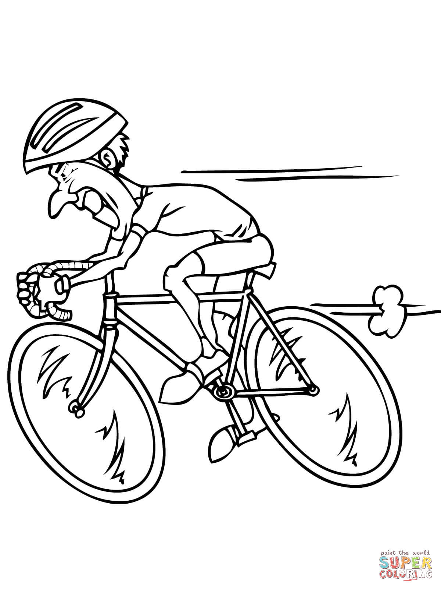
Hvor hurtigt drejer hjulene rundt?
Altså frekvensen (antal omgange på ét sekund)
Hvilke oplysninger har I brug for?
- En formel med en forklaring?
- Vinkler, grader og radianer?
- Størrelsen på hjulene?
Størrelser og formler
Størrelser
| \(T\) | Periode |
| \(\omega\) | Vinkelhastighed |
| \(v\) | Hastighed/fart |
| \(f\) | Frekvens |
| \(O\) | Omkreds |
| \(r\) | Radius |
Formler
- \(f=\frac{1}{T}\)
- \(\omega = \frac{2 \pi}{T}\)
- \(\omega = 2 \pi f\)
- \(O = 2 \pi r\)
- \(v = \omega \cdot r\)
- \(v = \frac{2 \pi r}{T} = \frac{O}{T}\)
Grader og radianer
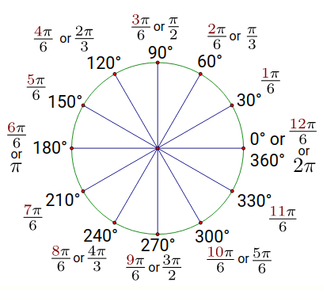
Hvor hurtigt drejer hjulene rundt?
Udfør jeres beregninger.
Hvad er jeres resultater?
Vindmølle
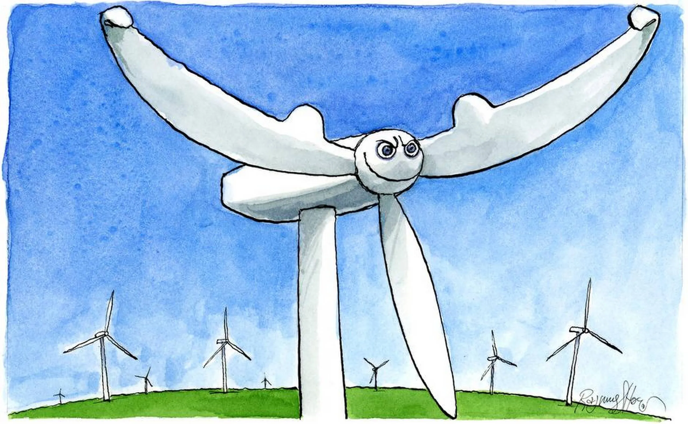
Hvad er vingespidsernes fart?
Hvilke oplysninger har I brug for?
- Rotationshastighed(vinkelhastighed)?
- Frem med jeres stopure(mobiler)!
- Vingernes størrelse?
- Vindmølleparken hedder Horns rev 2
Hvad er vingespidsernes fart?
Udfør jeres beregninger.
Hvad er jeres resultater?
Virkelig gamle racercykler
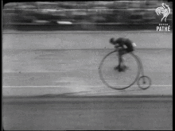
Hvorfor så de sådan ud?
Hvorfor vælter vi ikke på cykel?
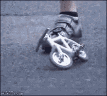
Demonstration
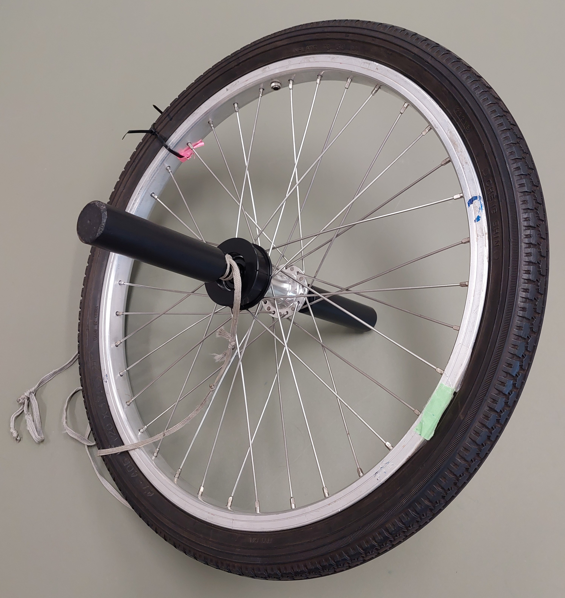
Det skyldes præcession
Som I kender det fra en …
Snurretop!
Hov, ikke den…
Men den
Jorden gør det samme
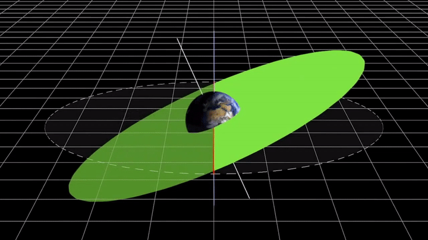
Præcessionsperioden er på 25800 år!
Det kan vises i stellarium
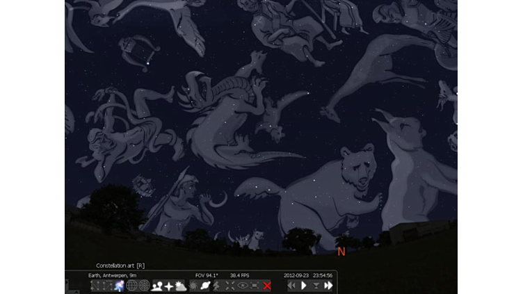
And now for something completely different
Hvad har det her med hinanden at gøre?
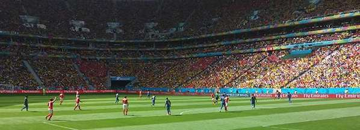
Nej, det var ikke lige det
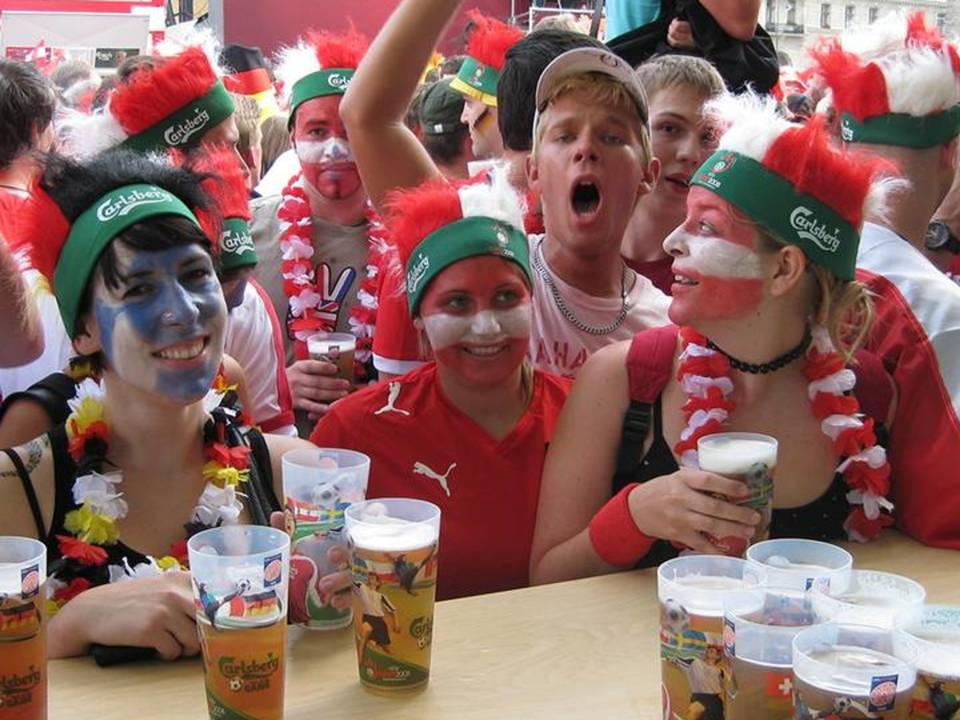
Men det her!
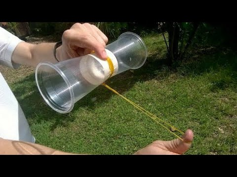

Lad os bygge dem selv
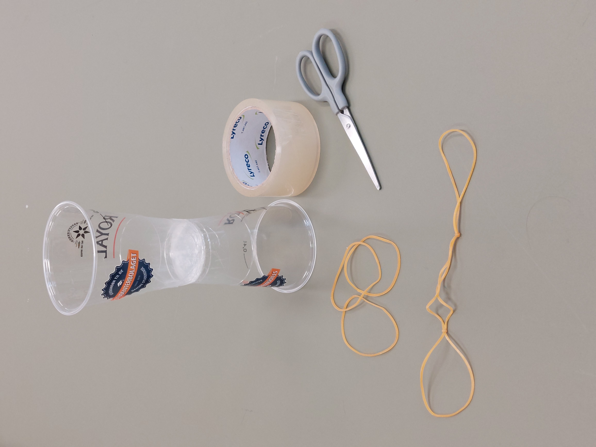
- Fold nogle stykker tape, som kan holde de to bunde af kopperne sammen.
- Sæt tape langs samlingen af de to bunde.
- Bind 3 elastikker sammen til en lang.
- Vikl den lange elastik omkring samlingen af kopperne.
- Slip kopperne, så de flyver afsted.
En yderligere forklaring
Gedser-Rostock

{kind=link}
Det bruges også i Danmark!
Er der ik' mer' i hatten?
Yoda ka' I tro

Rulle op ad bakke
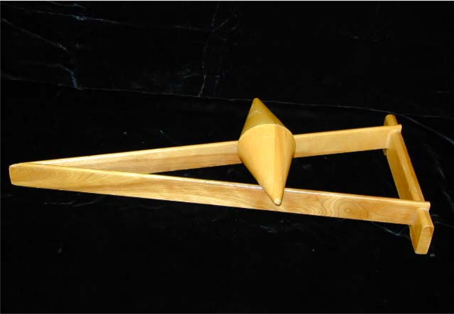
Satellit i geostationær bane
Hvor højt ligger en geostationær satellit over Jordens overflade?
Hvad ser I?
Hvilke oplysninger har I brug for?
- Noget baggrundsviden?
- Nogle oplysninger om Jorden?
- Nogle oplysninger om satellitten?
Newtons gravitationslov + centripetalkraft
\[F_G = G \cdot \frac{m\cdot M}{R^2}\]
\[F_{res} = m \cdot a = m \cdot \omega^2\cdot r = m \cdot \frac{v^2}{r}\]
Hvad har det her med hinanden at gøre?

And now for something completely different, again!
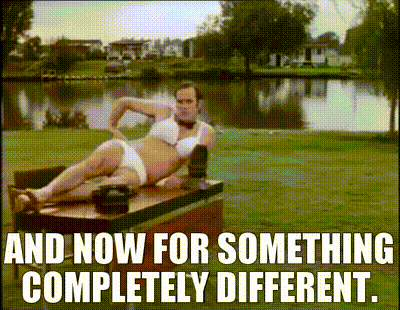
Hvor mange af jer er medlemmer af isbjørnenes klub?
Så må I hellere se at blive det. https://jacobdebel.github.io/Isbjoernenes_klub/